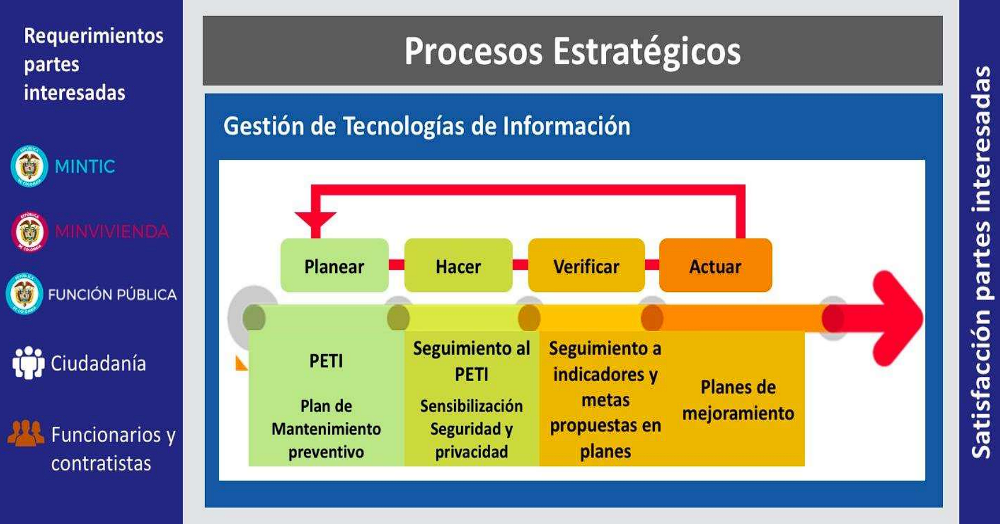

En esta semana nos centraremos en Gobierno de TI: cómo alinear la función de TI con los objetivos estratégicos de la empresa, cómo crear y medir valor a través de iniciativas tecnológicas y cómo gestionar procesos clave que aseguren control, transparencia y mejora continua.

Figura: Elementos clave del Gobierno de TI — estrategia, estructuras, procesos y métricas.
Objetivos de aprendizaje
Comprender el propósito y alcance del Gobierno de TI en la organización.
Aprender a alinear la estrategia de TI con los objetivos del negocio y priorizar iniciativas.
Conocer mecanismos y estructuras (comités, RACI, políticas) para la toma de decisiones y control.
Diseñar indicadores y métricas para medir creación de valor (beneficios, ROI, SLA, TCO).
Mapear y mejorar procesos clave de TI para asegurar cumplimiento, calidad y continuidad.
Contenido
1. ¿Qué es el Gobierno de TI?
El Gobierno de TI es el conjunto de estructuras, procesos y relaciones que aseguran que la TI de la organización soporta y extiende las estrategias y objetivos de la empresa, entregando valor y gestionando riesgos. Incluye toma de decisiones, rendición de cuentas y mecanismos de control.
Objetivos: Alineamiento, creación de valor, gestión de riesgos, optimización de recursos y cumplimiento.
Ámbitos: estrategia, cartera de inversiones, políticas, arquitectura, seguridad y continuidad.
2. Alineamiento estratégico de TI con los objetivos de la empresa
El alinear TI con el negocio implica traducir la visión y metas corporativas en iniciativas tecnológicas priorizadas por valor y riesgo.
Modelo de valor: definir casos de uso que generen ingresos, reduzcan costos o mitiguen riesgos.
Gestión de cartera (IT Portfolio): categorizar proyectos (transformación, mantenimiento, compliance) y priorizar según beneficios y capacidad.
Demand & Demand Management: procesos para captar, evaluar y priorizar solicitudes de TI.
KPIs de alineamiento: porcentaje de iniciativas alineadas, % de roadmap entregado, tiempo-to-value.
3. Creación de valor y medición
Medir creación de valor requiere métricas financieras y no financieras que demuestren impacto real en el negocio.
Métricas financieras: ROI, NPV, Payback, TCO, reducción de costos operativos.
Métricas operativas: SLA compliance, disponibilidad, mean time to repair (MTTR).
Métricas de usuario/negocio: satisfacción del usuario, aumento de ventas, conversión, tiempo de proceso.
Implementar un benefits realization plan para hacer seguimiento de los beneficios esperados post-implementación.
4. Gestión de procesos en Gobierno de TI
Procesos bien definidos permiten control, repetibilidad y mejora continua. Algunas áreas críticas:
Gestión de la cartera de proyectos (Portfolio Management).
Gestión de cambios y releases.
Gestión de incidentes, problemas y continuidad (ITSM).
Gestión de proveedores y contratos (SLA/OLA).
Gestión de riesgos y cumplimiento.
Un ciclo típico de procesos: definir → ejecutar → medir → mejorar (Planificar, Hacer, Verificar, Actuar).
5. Estructuras y roles
Estructurar la gobernanza implica definir comités, roles y responsabilidades claras:
Comité de Dirección de TI / Steering Committee: decide prioridades y aprueba inversiones.
Oficina de Gestión de Proyectos (PMO): coordina portafolio y reportes.
Chief Information Officer (CIO) / Chief Digital Officer (CDO): vínculo estratégico con la dirección.
RACI: matriz de responsabilidades para procesos y entregables.
6. Marcos y buenas prácticas
Existen marcos y estándares que facilitan la implementación del gobierno:
COBIT: marco de gobierno y control orientado a la alineación y control de TI.
ITIL: buenas prácticas para ITSM (incident, change, problem, service catalog).
ISO/IEC 38500: directrices para la gobernanza corporativa de TI.
Adoptar políticas internas, policy-as-code y dashboards ejecutivos para visibilidad.
7. Roadmap de implementación (resumen)
Diagnóstico & patrocinio (2–4 semanas): evaluar madurez de gobierno y asegurar sponsor ejecutivo.
Diseño de gobierno (4–6 semanas): definir comités, procesos, KPIs y RACI.
Piloto y quick wins (6–10 semanas): implementar 2–3 procesos críticos (p.ej., demand mgmt, change mgmt) y dashboards.
Escalamiento y mejora continua (continuo): ampliar alcance, automatizar reportes y vincular beneficios al presupuesto.
8. Laboratorio sugerido (entregable mínimo)
Título: Implementación inicial de Gobierno de TI — Charter, RACI, Portafolio y Dashboard de valor
Entregables mínimos:
Documento: Charter de Gobierno de TI (objetivos, alcance, patrocinio y estructura de comités).
Matriz RACI para procesos clave (gestión de cartera, cambios, incidentes).
Plan de priorización del portafolio con criterios (valor, riesgo, capacidad).
Dashboard ejecutivo (plantilla Excel / Power BI) con KPIs de valor y rendimiento.
Checklist de control y plan de benefits realization.
9. Beneficios esperados
Decisiones de inversión en TI más alineadas y transparentes.
Mayor probabilidad de entrega de beneficios (time-to-value reducido).
Mejor gestión de riesgos y cumplimiento regulatorio.
Optimización de costos y mayor retorno de las inversiones TI.
10. Herramientas y plantillas recomendadas
Área
Herramientas / Plantillas
Uso
Gobierno / Marco
Plantilla Charter, RACI, políticas internas
Definir estructura y responsabilidades
Portfolio / Prioritización
Matriz valor/riesgo, scoring en Excel / Power BI
Priorizar iniciativas
Medición
Templates KPI, dashboard ejecutivo
Monitoreo de creación de valor y SLAs
Materiales de estudio
Lectura: Guía práctica de Gobierno de TI
Documento con definiciones, estructura de gobierno, ejemplos de KPI y checklist de implementación.
En la Semana 09 abordamos los principios y prácticas del Gobierno de TI: cómo alinearlo con la estrategia, cómo medir y demostrar creación de valor y cómo diseñar procesos y estructuras que permitan control y mejora continua. El enfoque práctico es entregar un charter, una matriz RACI y un tablero de KPIs que muestren impacto al negocio.
¿Quieres que genere ahora el Charter de Gobierno, la matriz RACI y el dashboard KPI listos para descargar y usar en tu repositorio? Puedo generarlos en formatos editables (.docx, .xlsx, Power BI / Excel).